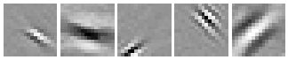
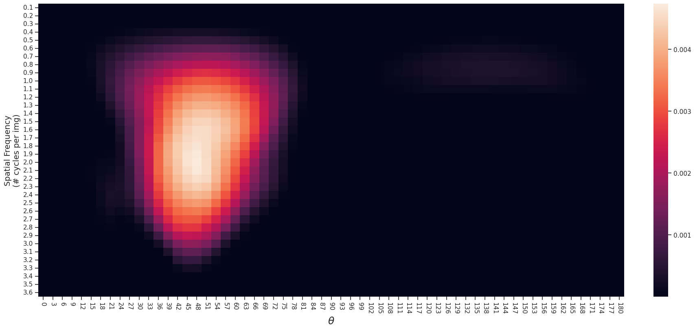
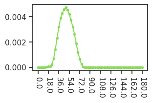

(27) contrast latency fig, find optimal params#
project = iP-VAE, host = mach, device = cuda:1
Motivation:
Find the best s_freq and theta to use for that one neuron (i = order[338])
Using: (16, 24.0)
Show code cell source
# HIDE CODE
import os, sys
from IPython.display import display
# tmp & extras dir
git_dir = os.path.join(os.environ['HOME'], 'Dropbox/git')
extras_dir = os.path.join(git_dir, 'jb-progress-2025/_extras')
fig_base_dir = os.path.join(git_dir, 'jb-progress-2025/figs')
tmp_dir = os.path.join(git_dir, 'jb-progress-2025/tmp')
# GitHub
sys.path.insert(0, os.path.join(git_dir, '_IterativeVAE'))
from figures.convergence import plot_convergence
from figures.imgs import plot_weights
from figures.fighelper import *
from main.train import *
# warnings, tqdm, & style
warnings.filterwarnings('ignore', category=DeprecationWarning)
warnings.filterwarnings('ignore', category=FutureWarning)
warnings.filterwarnings('ignore', category=UserWarning)
from rich.jupyter import print
%matplotlib inline
set_style()
from analysis.tuning import drifting_grating_feeder, drifting_grating_feeder_params
from utils.animation import show_movie
device_idx = 1
device = f'cuda:{device_idx}'
print(f"device: {device} ——— host: {os.uname().nodename}")
device: cuda:1 ——— host: mach
Basic setup#
pal_models = get_palette_models()
chkpts_dir = add_home('Dropbox/chkpts/_IterativeVAE')
figs_dir = pjoin(fig_base_dir, 'figs_2025-03')
os.makedirs(figs_dir, exist_ok=True)
len(os.listdir(chkpts_dir)), len(os.listdir(figs_dir))
(420, 2)
files = [f for f in os.listdir(chkpts_dir) if 'vH16' in f]
files = sorted(files, key=alphanum_sort_key)
seq_len, beta = 16, 24
selected_fits = [
f for f in files if (
f't-{seq_len}_b-{beta:0.3g}' in f
and 'softplus' not in f)
]
print(selected_fits)
[ 'gaussian+relu-<grad|lin>-vH16-t-16_b-24_mach-1_(2025_03_07,04:45)', 'gaussian-<grad|lin>-vH16-t-16_b-24_mach-1_(2025_03_07,04:09)', 'poisson-<grad|lin>-vH16-t-16_b-24_mach-1_(2025_03_07,07:38)' ]
Load trainer#
f = next(f for f in selected_fits if 'poisson' in f)
tr = load_model_lite(pjoin(chkpts_dir, f), device=device)[0]
u0 = tonp(tr.model.layer.u_init[0].squeeze())
order = np.argsort(u0)
selected_neurons = [380, 47, 281, 117, 338]
tr.model.show(order=order[selected_neurons], method='abs-max', nrows=1, dpi=40);

Find optimal params#
s_feq / theta
param_grid = drifting_grating_feeder_params(
contrast_min=1.0,
contrast_max=1.0,
s_freq_min=0.1,
s_freq_max=3.6,
s_freq_delta=0.1,
theta_delta=3,
)
n_frames_for_full_cycle = 500
feeder, feeder_kws = drifting_grating_feeder(
npix=tr.model.cfg.input_sz[-1],
param_grid=param_grid,
device=device,
n_frames_per_cycle=n_frames_for_full_cycle,
)
len(param_grid)
2196
fwd: xtract ftrs#
%%time
trial_timepoints = range(
n_frames_for_full_cycle,
n_frames_for_full_cycle * 2,
)
n_trials = 100
spk_counts_all = []
for i in tqdm(range(n_trials)):
tr.model.cfg.set_seeds(i)
output = tr.model.xtract_ftr(
feeder=FEEDER_CLASSES['drifting-grating'](**feeder_kws),
seq=range(2 * n_frames_for_full_cycle),
return_extras=['samples'],
).stack()
spks = output['samples'][:, trial_timepoints]
spk_counts_all.append(tonp(spks.sum(1)))
spk_counts_all = np.stack(spk_counts_all)
spk_counts_all.shape
100%|█████████████████████████████████████████| 100/100 [05:07<00:00, 3.07s/it]
CPU times: user 4min 14s, sys: 2.6 s, total: 4min 16s
Wall time: 5min 7s
(100, 2196, 512)
shape = (n_trials, *param_grid.param_lengths, tr.model.cfg.n_latents[0])
avg_spk_counts = spk_counts_all.reshape(shape)
avg_spk_counts = avg_spk_counts.mean(0)
avg_spk_counts.shape
(1, 36, 61, 512)
tr.model.show(order=order[selected_neurons], method='abs-max', nrows=1, dpi=40);
neuron_i = order[selected_neurons[-1]]
tuning = avg_spk_counts[..., neuron_i]
x2p = tuning[0, ...]
x2p /= np.sum(x2p)
fig, ax = create_figure(1, 1, (17, 8))
sns.heatmap(data=x2p, ax=ax)
ax.set_ylabel('Spatial Frequency\n(# cycles per img)', fontsize=14)
ax.set_xlabel(r'$\theta$', fontsize=18)
s_freq = param_grid.param_dict['s_freq']
ax.set_yticks(np.array(range(len(s_freq))) + 0.5)
ax.set_yticklabels(s_freq, rotation=0)
theta = param_grid.param_dict['theta']
ax.set_xticks(np.array(range(len(theta))) + 0.5)
ax.set_xticklabels([str(int(angle)) for angle in theta], rotation=-90)
plt.show()

favorite_idx = np.argmax(tuning)
favorite_params = param_grid[favorite_idx]
print(favorite_params)
{'contrast': 1.0, 's_freq': 2.0, 'theta': 48.0}
favorite_s_freq_idx = param_grid.param_dict['s_freq'] == favorite_params['s_freq']
favorite_s_freq_idx = np.where(favorite_s_freq_idx)[0].item()
favorite_s_freq_idx
19
periodic_cmap, base_colors = get_periodic_palette(
len(param_grid.param_dict['theta']))
periodic_cmap
from_list

under
bad
over
tuning_curve_theta = tuning[0, favorite_s_freq_idx]
color = base_colors[np.argmax(tuning_curve_theta)]
fig, ax = create_figure()
ax.plot(tuning_curve_theta, color=color, marker='.')
xticks, xticklabels = zip(*[
(i, v) for i, v in
enumerate(param_grid.param_dict['theta'])
if i % 6 == 0
])
ax.set(xticks=xticks, xticklabels=xticklabels)
ax.tick_params(axis='x', labelrotation=-90)
plt.show()
